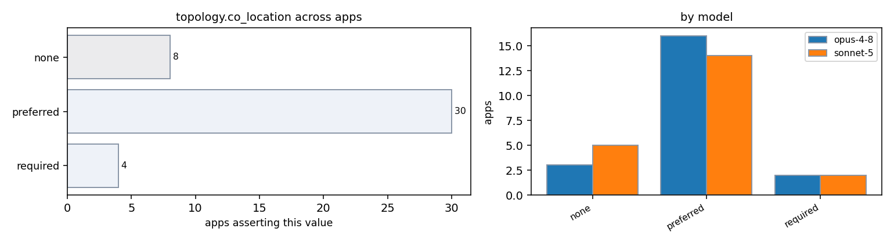

| app / variant | opus-4-8 | sonnet-5 | evidence |
|---|---|---|---|
| AMG2023:cuda | preferred | — | amg.c:360 (co-located GPUs per node for fast interconnect between ranks' devices) amg.c:551 (comm-heavy reductions) |
| AMG2023:mpi | preferred | — | amg.c:551 (frequent reductions + halo exchange => comm-heavy, benefits from co-location) |
| AMG:threaded-mpi | preferred | preferred | docs/amg.README:81-82 (parallel efficiency largely determined by speed of communications) docs/amg.README:79-82 (highly synchronous code) |
| Kripke:cpu | — | preferred | src/Kripke/ParallelComm.cpp:171-251 (frequent small neighbor messages in wavefront sweep favor co-located/adjacent ranks for latency) |
| Kripke:kripke.exe:cuda | — | preferred | src/Kripke/ParallelComm.cpp:18-26 (GPU-aware MPI path passes device pointers directly between ranks, benefiting from co-located/fast-linked GPUs) |
| Kripke:kripke.exe:rocm | — | preferred | src/Kripke/ParallelComm.cpp:18-26 (GPU-aware MPI path passes device pointers directly between ranks under KRIPKE_USE_HIP too) |
| Kripke:kripke:cuda | preferred | — | src/Kripke/ParallelComm.cpp:174-251 (inter-rank neighbor exchange) |
| Kripke:mpi | preferred | — | src/Kripke/ParallelComm.cpp:118-183 (neighbor plane exchange) README.md:8 (asynchronous MPI parallel sweep) |
| Kripke:mpi-gpu-aware | preferred | — | src/Kripke/ParallelComm.cpp:164-166,241-243 (direct device buffers on interconnect) |
| Quicksilver:cuda | — | none | absent: MPI_Win_shared|MPI_Comm_split_type in src/ |
| Quicksilver:threaded-mpi | preferred | — | src/MpiCommObject.cc:34 (per-cycle barrier + neighbor exchange, comm-heavy benefits from co-location) |
| Quicksilver:threaded-mpi-cpu | — | none | absent: MPI_Win_shared|MPI_Comm_split_type in src/ |
| STREAM:stream_c.exe:threaded | required | required | single shared-memory process; all threads on one node stream.c:248-267 (OpenMP threads share one address space/process) |
| STREAM:stream_f.exe:threaded | required | — | multithreaded shared-memory; threads pack on one node |
| hpl:mpi | — | preferred | src/comm/HPL_1ring.c, HPL_blong.c, HPL_blonM.c (panel broadcast along ring within row/col communicator requires co-located, tightly coupled ranks) |
| hpl:mpi-cpu | preferred | — | src/pgesv/HPL_rollT.c:205-234 (large frequent panel/U exchanges benefit from co-location) |
| hypre:cuda | preferred | — | src/CMakeLists.txt:171 (GPU-aware MPI wants devices with fast interconnect co-located) |
| hypre:mpi | preferred | — | src/multivector/par_csr_pmvcomm.c:65-96 (comm-heavy neighbor exchange favors packing ranks together) |
| hypre:mpi-cpu-boomeramg | — | preferred | src/parcsr_ls/par_cycle.c:22-60 (per-level halo exchange is latency sensitive, benefits from co-located ranks but not required) |
| hypre:mpi-cuda-boomeramg | — | preferred | src/multivector/par_csr_pmvcomm.c:65-97 (per-level neighbor halo exchange, latency-sensitive small messages) combined with GPU-aware MPI option in src/docs/usr-manual/ch-misc.rst:414-417 (co-location of GPU ranks improves interconnect path e.g. NVLink/InfiniBand GPUDirect) |
| lammps:cuda-kokkos | preferred | — | doc/src/Speed_kokkos.rst:316 (GPU-aware MPI highly recommended => wants fast GPU interconnect / co-location) doc/src/Speed_kokkos.rst:307-309 (one rank per GPU) |
| lammps:gpu-kokkos-reaxff | — | required | doc/src/pair_reaxff.rst:68-75 (Kokkos reaxff can run on GPUs and also use OpenMP multithreading; choice of half/full neighbor list via package kokkos command) |
| lammps:mpi | preferred | — | src/REAXFF/fix_qeq_reaxff.cpp:788-810 (per-timestep CG solve with halo exchange + reductions favors keeping neighbor ranks together) |
| lammps:reaxff | — | preferred | src/REAXFF/fix_qeq_reaxff.cpp:674-796 (per-CG-iteration forward/reverse comm; tight coupling between neighboring ranks favors co-location for latency) |
| lammps:threaded | preferred | — | src/OPENMP/reaxff_forces_omp.cpp:122-153 (threads share a node/rank's memory, so co-locate) |
| miniFE:cuda | preferred | — | cuda/src/exchange_externals.hpp:116-119 (GPUDIRECT device-pointer sends want fast GPU-GPU link) cuda/src/Vector_functions.hpp (allreduce reduction per iter) |
| miniFE:miniFE.x:mpi | preferred | — | ref/src/exchange_externals.hpp:96-153 (neighbor exchange favors nearby ranks) ref/src/Vector_functions.hpp:221 (allreduce benefits from co-location) |
| miniFE:miniFE:mpi | — | preferred | ref/src/cg_solve.hpp:152-159 (CG iterates fixed max_iter, each rank does local work then syncs at halo exchange + reduction - required co-location for perf but not shared memory) |
| miniFE:miniFE:threaded-mpi | — | preferred | openmp-opt-knl/basic/Vector_functions.hpp:237-240 (per-rank threads then cross-rank reduction: co-location aids latency but not required) |
| miniFE:mpi-cuda | — | preferred | cuda/src/Makefile:21 (#-DGPUDIRECT option implies benefit from direct GPU-GPU path when ranks/GPUs are co-located) |
| mixbench:cpu | — | none | absent: MPI|shm_open in mixbench-cpu/ |
| mixbench:cuda | none | none | absent: MPI_|nccl in mixbench-cuda absent: MPI|shm_open|cudaIpc in mixbench-cuda/ |
| mixbench:rocm | none | — | absent: MPI_|rccl in mixbench-hip |
| osu-micro-benchmarks:cpu | — | none | absent: MPI_Comm_split_type|OMPI_COMM_TYPE_NODE|same.?node in c/mpi/collective/blocking/osu_allreduce.c |
| osu-micro-benchmarks:mpi-cpu | — | preferred | README.md:1046-1050 (osu_bw run examples showing rank0/rank1 on possibly different devices/hosts across a hostfile) c/mpi/pt2pt/standard/osu_bw.c:116-123 (only 2 ranks; benchmark measures inter-node/inter-process link so co-location is optional but bandwidth is best measured host-to-host over the interconnect under test) |
| osu-micro-benchmarks:osu_allreduce:mpi | none | — | absent: MPI_Win_allocate_shared|shm_open in c/mpi/collective/blocking/osu_allreduce.c |
| osu-micro-benchmarks:osu_latency:cuda | — | preferred | README.md:1040-1044 (test targets GPU-GPU transfer latency, best measured with ranks co-located near their GPUs / on same fabric segment) |
| osu-micro-benchmarks:osu_latency:mpi | preferred | preferred | c/mpi/pt2pt/standard/osu_latency.c:177-273 (2 ranks exchange messages; want fast link between the pair) c/mpi/pt2pt/standard/osu_latency.c:106-113 (exactly 2 ranks doing tight ping-pong; low latency best achieved intra-node or on fast interconnect) |